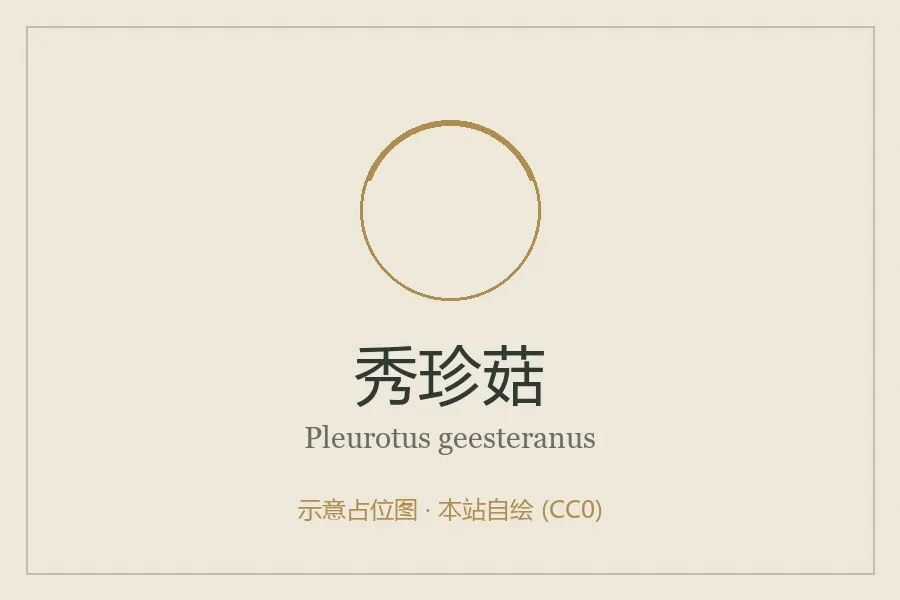

真菌 · 真菌界
秀珍菇 Pleurotus geesteranus

秀珍菇是小型侧耳，菌盖薄而小巧、丛生如花，口感脆嫩清甜，是近年来栽培广泛的食用菌，适合炒食和涮火锅。
- 分类
- 门担子菌门纲伞菌纲目伞菌目科侧耳科属侧耳属
- 栖息环境
- 阔叶树枯木与人工菌袋，喜温暖湿润、通风良好的环境
- 地理分布
- 原产热带与亚热带，现中国南方多地栽培
- 保护级别
- 暂无评估（IUCN 未评估，人工栽培食用菌）
物种志
秀珍菇是担子菌门侧耳科的真菌，属于侧耳属中的小型种类，子实体丛生。菌盖呈扇形、贝壳状或半圆形，直径 2–6 cm，比普通平菇小得多，表面灰白色至灰褐色，光滑，边缘常内卷；菌肉白色，薄而脆嫩。菌褶白色至淡黄色，延生于菌柄；菌柄偏生或侧生，白色，短而细。孢子印白色至淡紫色。
秀珍菇原产于热带和亚热带地区，野生时生于阔叶树的枯木上，靠分解木质素和纤维素生长。它出菇温度比平菇高，适合在温暖季节栽培，可用木屑、棉籽壳、玉米芯等作培养料，是中国南方发展较快的栽培品种。秀珍菇菌盖小巧、肉质脆嫩、味道清甜，可炒食、做汤、涮火锅和烧烤；由于菌盖薄，烹调时间不宜过长，以免失去脆嫩口感。
形态与习性
- 菌盖扇形或贝壳状，直径 2–6 cm
- 菌肉白色，薄而脆嫩
- 菌褶白色至淡黄色，延生
- 菌柄偏生或侧生，短而细
- 孢子印白色至淡紫色
- 栽培木屑、棉籽壳、玉米芯培养料
- 食用性可食，口感脆嫩清甜
趣味知识
- 秀珍菇的菌盖只有 2–6 cm，比普通平菇小巧得多。
- 它丛生如花，一丛能长出十几朵小菇。
- 秀珍菇出菇温度比平菇高，适合温暖季节栽培。
- 菌盖薄，炒或涮的时间要短，才能保持脆嫩。